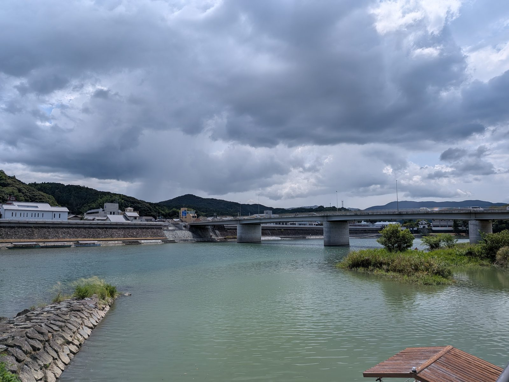

大洲の視点 ・ 出典: 時事通信（情報源日付: 2026/03/18、判決日） ・ 約10分で読める

2018年の西日本豪雨で、野村ダム（西予市）と鹿野川ダム（大洲市）が緊急放流を行い、下流の肱川が氾濫した。
住宅の浸水被害に加え、大洲市で３人、西予市で５人、合わせて８人が犠牲になった。
この放流操作や避難情報の提供に問題があったとして、西予市・大洲市の被災者・遺族ら31人が、国（国土交通省四国地方整備局）と西予市・大洲市に対し、総額約５億3800万円の損害賠償を求めていた裁判。
2026年３月18日、松山地方裁判所（古市文孝裁判長）は原告側の請求をすべて退けた。
せっかくなので、この裁判についてもう少し深く調べてみた。もともとは2020年１月、西予市野村町の遺族ら８人が提訴したのが始まり。
同年９月には新たに13人が追加提訴し、最終的に大洲市の被災者も加わって原告31人まで膨らんだ、６年がかりの裁判だったようだ。
争点は大きく２つ。ひとつは「ダムの操作」について。
原告側は、両ダムを管理する国交省四国地方整備局が事前に十分な放流をして貯水容量を確保していなかったため、豪雨で満水になり一気に緊急放流せざるを得なくなったと主張した。
さらに1996年に操作規則が変更され、大規模な洪水には対応しきれない基準になっていたとも訴えていた。
国側は、緊急放流は操作規則にのっとった対応で、ダム決壊の恐れがあった以上やむを得なかったと反論している。
もうひとつは「避難情報の周知」について。原告側は、西予市・大洲市の避難指示や情報提供が不十分で、住民が危険な状況を認識できず、逃げ遅れて亡くなった人もいたと主張。
両市側は、防災行政無線などを使って避難情報は適切に周知していたと主張していた。
かみ砕くと、原告側は「危ないと分かっていたのに、対応が後手に回った」と言い、国・市側は「あの時点でできる対応はしていたし、ルール通りだった」と言っている、という構図だ。
判決で松山地裁は、ダムの操作規則について「社会通念に照らして安全性を欠いていたとは認められない」とした。
ダム管理者が豪雨発生当時、あれほどの大規模な豪雨になると認識（予見）できたとまでは言えないとして、過失を認めなかった。
ここで出てくる「過失」「予見可能性」「裁量権の逸脱・濫用」は、どれも国家賠償の裁判で必ず出てくるキーワードだ。
過失とは「もっと注意していれば防げたのに、注意を怠った落ち度」のこと。
予見可能性とは「その時点で、そこまでの規模の災害が来ると分かっていたはずかどうか」。
裁量権の逸脱・濫用とは、行政の判断にはある程度の自由（裁量）が認められているけれど、その自由の範囲を明らかに超えたひどい判断だったかどうか、という基準になる。
今回の判決を中学生にも分かるように言い直すと、「あの時点のダム管理者に、これから何が起きるか正確に予測しろというのは酷だし、市の避難対応も、自由に任された範囲を明らかに踏み外したとまでは言えない」という判断になる。
ただし市の避難指示については、「裁量権の逸脱・濫用とは言えない」として違法性は否定しつつ、「改善の余地がある」とも言及したとのこと。
「市の対応に問題は一切なかった」と太鼓判を押したわけではなさそうだ。
原告側はこの判決を受けて実際に控訴した。判決当日の時事通信は「原告は控訴の方針」と報じている。
その後の地元放送は、西予市・大洲市の遺族ら原告団27人が2026年３月30日に松山地裁へ控訴状を提出し、31日付で受理されたと伝えた（判決当初の原告31人から27人に減っているのは、控訴した人数ということのようだ）。
ただしこの放送局の記事は現在は配信元から削除されていて、リンクを示せない。控訴の日付と人数については、いま公開されている資料の中に裏づけを見つけられなかった。
今後は高松高等裁判所で争いが続く見通しで、少なくとも「これで終わった話」にはなっていない。
調べていて素朴に気になったのが、「もし原告側が勝っていたら、５億3800万円は31人で山分けになるのか」という点。
結論から言うと、これは「山分け」という発想自体がそもそも違う。
日本の民事訴訟では、複数の原告が一緒に訴える場合でも、賠償額は原告一人ひとりについて個別に算定されるのが基本の考え方で、国家賠償請求もこの枠組みに沿って進む。
亡くなった人の遺族が請求する場合は、①本人が生きていれば得られたはずの収入（逸失利益）、②遺族の精神的な苦痛に対する慰謝料、③葬儀費用などを積み上げて計算する。
家屋や家財が被害を受けた被災者の場合は、修理費や家財の損害額を積み上げて計算する。
つまり請求総額の５億3800万円というのは、31人それぞれの被害の重さに応じて計算された金額を単純に足し合わせた「合計値」であって、最初から均等割りを想定した金額ではない。
仮に裁判所が請求どおり認めていたとしても、実際に振り込まれる金額は原告ごとにまったく違っていたはずだ。
ちなみに、人の死亡に対する慰謝料には、これまでの数多くの裁判例の積み重ねから、大まかな相場観（目安となる金額の幅）があるとされている。
実務上はその相場観をベースに、扶養家族の有無といった個々の事情を加味して金額を調整していくのが一般的らしい。
ただし、今回の裁判で31人それぞれの請求額の内訳が具体的にいくらだったかまでは、公開資料の範囲では見つけられなかった。
「一般的な仕組みとしてはこうなっているはずだが、この裁判の具体的な内訳までは分からなかった」と正直に書いておきたい。
もう一つ気になったのが、「もし賠償が認められていたら、そのお金はどこから出ていたのか」ということ。
今回の被告は３者。国（国土交通省四国地方整備局、つまり両ダムの管理者）と、西予市・大洲市（避難情報の周知の責任を問われた側）だ。
もし国の賠償責任が認められていた場合、その支払いは国の一般会計予算、つまり全国から集めた税金から出ることになる。
市の責任が認められていた場合はどうか。実は多くの市区町村は「全国市長会市民総合賠償補償保険」のような賠償責任保険に加入していて、市の施設や業務に関連して賠償責任が生じた場合は、この保険から保険金が支払われる仕組みを持っていることが多い。
ただし、こうした自治体向けの保険は、道路の陥没事故や公共施設の設備不良といった、比較的小規模で個別の事故を想定して設計されているケースが多い。
今回のような大規模自然災害時の避難対応の是非を問う訴訟までカバーする内容になっているかどうかは、契約の約款次第としか言えない。
西予市・大洲市が実際にどんな保険にどんな条件で加入しているのかまでは、公開情報からは分からなかった。
仮に保険の対象外だった場合、市の負担分は最終的に市の一般会計、つまり住民税や固定資産税といった地方税から支出されることになる。
保険というクッションを挟むにせよ、最終的に税金から出るにせよ、突き詰めれば「原資はどこかの誰かの税金や保険料」という構造そのものは変わらない。
ここまで調べていて分かったのは、今回の松山地裁の判断はいきなり出てきたものではなく、40年以上前に最高裁が示した枠組みの上に乗っている、ということ。
1984年（昭和59年）１月26日、大阪府大東市を流れる川の氾濫をめぐる「大東水害訴訟」で、最高裁は河川管理の瑕疵（欠陥）の有無を判断する基準を示した。
それは「同種・同規模の河川の管理の一般水準及び社会通念に照らして是認しうる安全性を備えていれば足りる」というもので、法律の世界では通称「大東基準」と呼ばれている。
この基準のポイントは、河川の改修や整備が進んでいる途中の段階では、「完璧な安全性」ではなく「その時点での一般的な水準に見合った、いわば過渡的な安全性」があれば足りる、と判断される点にある。
つまり、後から振り返れば「もっとこうしていれば被害を防げたはずだ」と言えるケースであっても、それだけでは河川管理者の法的な責任（瑕疵）は認められない、という考え方だ。
公益財団法人河川財団の「水害研究会」がまとめた報告書（令和５年11月）によると、この大東基準はその後の水害訴訟でも一貫して使われ続けていて、河川管理者側の責任を制限する方向に働いてきたとされている。
今回の松山地裁判決に出てきた「社会通念に照らして安全性を欠いていたとは認められない」という言い回しも、この大東基準の流れをそのまま踏襲したものと見てよさそうだ。
つまり原告側は、40年以上前から積み上がってきた「行政側にとって有利な判断枠組み」を相手に戦っていたことになる。
もちろん、この基準自体が近年の気候変動による豪雨の激甚化に対応しきれていないのではないか、という指摘も研究者の間では出てきているようだが、少なくとも現時点の裁判所の判断基準としては、この枠組みがまだ生き続けている。
「自然災害と行政の予見可能性」をめぐって国の責任が争われた裁判は、実はこの豪雨訴訟だけではない。
もっと大きなニュースになった例として、2011年の東日本大震災・福島第一原発事故をめぐる国家賠償請求訴訟がある。
2022年６月17日、最高裁判所第二小法廷は、生業訴訟・群馬訴訟・千葉訴訟・愛媛訴訟という４つの訴訟をまとめて判断し、「国が東京電力に津波対策を命じなかったこと（規制権限の不行使）」について、国の賠償責任を認めない判決を言い渡した。
争点になったのは、国がもし東京電力に事前の対策を命じていたら、事故を防げたかどうか、という点。
最高裁の多数意見は、当時の「長期評価」という予測に基づいて対策を命じていたとしても、実際の津波（マグニチュード9.1、最大約5.5ｍ）は想定（マグニチュード8.2程度、浸水深約2.6ｍ以下）と規模や到達経路が大きく異なっていたため、対策をしていても本件の大量の海水流入は防げなかった可能性が高い、と判断した。
つまり「対策と結果の間に、法的に問える因果関係が認められない」という理屈で、国の責任が否定されたことになる。
この判決、実は４人の裁判官のうち１人（三浦守裁判官）が明確な反対意見を書いていて、反対意見だけで29ページに及んだのに対して、多数意見は６ページに満たなかったという、かなり異例な内容になっている。
それだけこの種の判断が、法律の専門家の間でも一枚岩ではない、難しい問題だということが伝わってくる。
今回の大洲・西予市の豪雨訴訟も、規模も背景もまったく違う話ではあるけれど、「行政が事前にどこまで予測し、対策すべきだったか」を問う構図としては、この原発訴訟と根っこの部分でよく似ている。
そして、どちらも住民側・原告側が最終的に敗訴している、という点も共通している。
国家賠償で自然災害時の行政責任を問う裁判は、全国的に見ても住民側が勝つのが非常に難しい領域らしい、ということが、今回いろいろ調べてみてよく分かった。
今回調べてみて、この裁判が問うているのは「あの日、具体的に何が起きたか」だけでなく、「これから同じ規模、あるいはそれ以上の豪雨が来たときに、ダムの操作や避難情報の伝え方をどう変えるか」という、今の大洲にも直結する話なんだと分かった。
裁判所は法律上の過失は認めなかったものの、避難指示に「改善の余地がある」と触れている以上、大洲市・西予市にとっての宿題は残っているはずだ。
大洲市も肱川の下流にあり、同じ豪雨・同じ川で被害を受けた当事者。
裁判の勝ち負けとは別に、あの時何が起きたのかを地域として忘れず、次の豪雨に備える材料にし続けることが大事だと思う。
正直に言うと、ここまで調べていて複雑な気持ちにもなった。もし本当にダムの操作にミスがあったなら、それは金額の大きさに関係なく、ちゃんと明らかにしてほしいと思う。
でも一方で、もし「念のため」程度の話で国や市の賠償責任が認められて、そのお金が税金や保険料という形で結局は住民に跳ね返ってくるのだとしたら、一住民としては素直に喜べない気もする。
この「勝っても負けても、どちらにしてもすっきりしない」という感覚こそが、この手の裁判が抱える難しさなんだと思う。
ただ、だからといって「裁判はしない方がいい」ということにはならない。
訴えを起こさなければ、そもそも何が起きたのかを法的な手続きの中で検証する機会自体がなくなってしまう。
今回の判決も、過失は認めなかったものの「改善の余地がある」という言及は残していて、これは裁判という手続きを経たからこそ表に出てきた指摘でもあるはずだ。
この記事をサイトに掲載した日: 2026/04/03